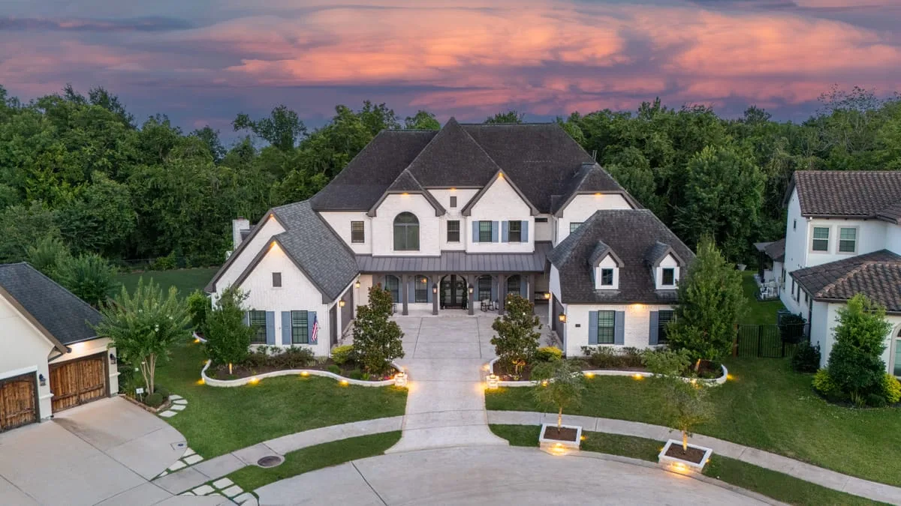
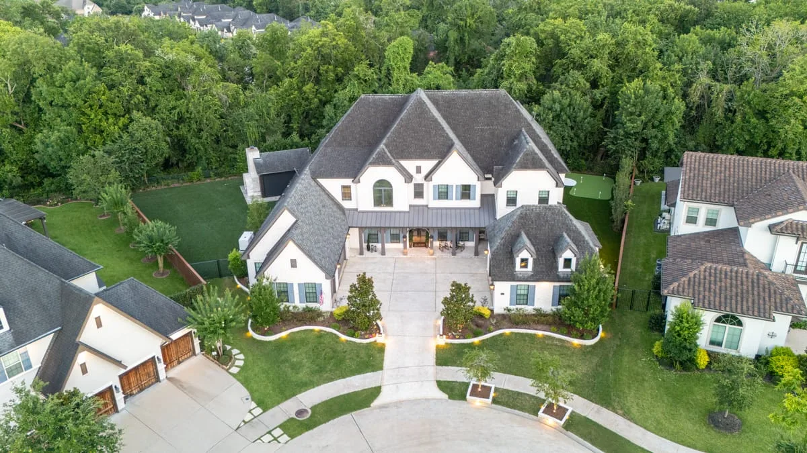
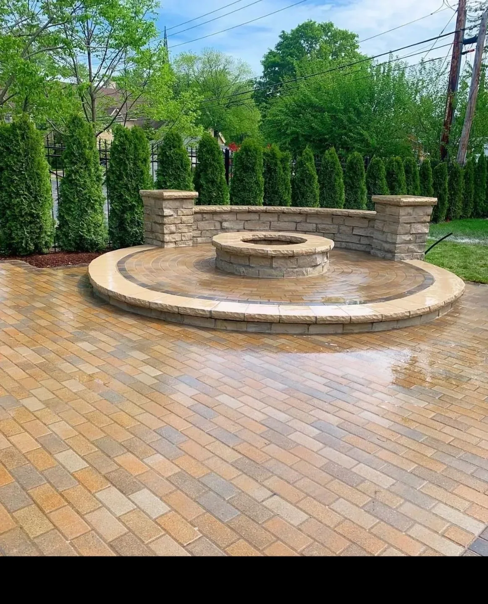
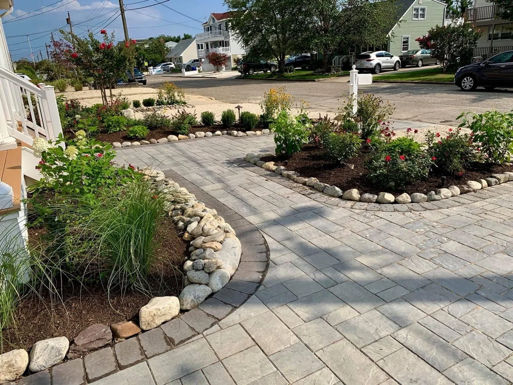

Give Your Home the Curb Appeal It Deserves
Driveway Contractor in Houston — Concrete & Pavers
- Stamped & Decorative Concrete
- Free Consultation
Houston's Trusted Driveway Contractor
Your driveway is the first thing guests see — and the last thing you want to look worn, cracked, or dated. Longhorn Hardscape & Construction installs concrete driveways, paver driveways, exposed aggregate, and stamped concrete throughout Houston, Missouri City, Sugar Land, Katy, and Pearland. From straightforward replacement driveways to sweeping circular entries with landscape lighting, we engineer every surface for Houston's expansive soil and deliver a finish that boosts curb appeal and property value. Every project starts with a free estimate.

Types of Driveways We Install in Houston
Plain Concrete Driveways
Durable, cost-effective concrete slabs with proper thickness, rebar reinforcement, and control joints for Houston's soil.
Stamped Concrete
Decorative concrete with patterns that replicate stone, brick, slate, or cobblestone — at a fraction of the material cost.
Paver Driveways
Individual concrete or brick pavers laid in custom patterns — elegant, easy to repair, and built to last 30+ years.
Exposed Aggregate
Textured concrete with visible stone aggregate — slip-resistant, visually rich, and naturally blends with landscaping.
Circular & Courtyard Driveways
Custom circular driveway designs with center islands, fountain bases, or decorative features for Houston estate homes.
Driveway Extensions & Repairs
Widen an existing driveway, add a parking pad, or repair cracked concrete — we match existing materials seamlessly.

Why Choose Longhorn for Your Houston Driveway
Proper Base & Drainage
Houston clay soil expands and contracts. We excavate deep, compact the base, and design proper drainage to prevent cracking.
Fast, Clean Installation
Most driveways are completed in 2–4 days. We protect your landscaping and clean up completely when we leave.
Transparent Pricing
Your written estimate is your final price. No surprises, no change orders unless you request changes.
Boosts Home Value
A quality driveway adds meaningful curb appeal and perceived value to your Houston home at sale time.
Our Driveway Installation Process
Free Consultation at Your Home
We measure, assess your drainage and base conditions, and recommend the best driveway option for your property and budget.
Design & Free Estimate
We design the layout, choose patterns and colors together, and provide a written estimate before we leave your property.
Demolition & Site Prep
We remove the old driveway, excavate to the correct depth, and compact a crushed stone base engineered for Houston's soil conditions.
Professional Installation
We form, pour, finish, and cure your driveway properly — including control joints, stamping, or paver installation as designed.
Final Walkthrough & Sealing
We apply a protective sealer (on concrete), clean the site, and walk through everything with you before we consider the job done.
Driveway Projects in Houston, TX
Concrete, pavers, and exposed aggregate driveways installed across Greater Houston.




Driveway Installation Areas We Serve
Driveway FAQs — Houston
Driveway scope depends on size, material choice (plain concrete, stamped, or pavers), demolition of an existing surface, base preparation depth, and any drainage work required. We visit your property and provide a written estimate at no charge — every driveway is measured and assessed individually.
A properly installed concrete driveway with adequate base preparation lasts 25–50 years in Texas. Houston's clay soil and heat cycles can stress inferior installations — proper excavation depth and base compaction are critical, and that's where we never cut corners.
Yes, stamped concrete is one of our specialties. We offer dozens of patterns and color options — popular choices include ashlar slate, cobblestone, brick, and Saltillo tile. We'll bring samples to your consultation so you can see exactly what it will look like.
Yes. Driveway extensions and widening are common projects we handle throughout Houston. We can match your existing concrete or transition to a different material for a fresh look. We'll assess your current driveway condition and drainage before recommending the best approach.